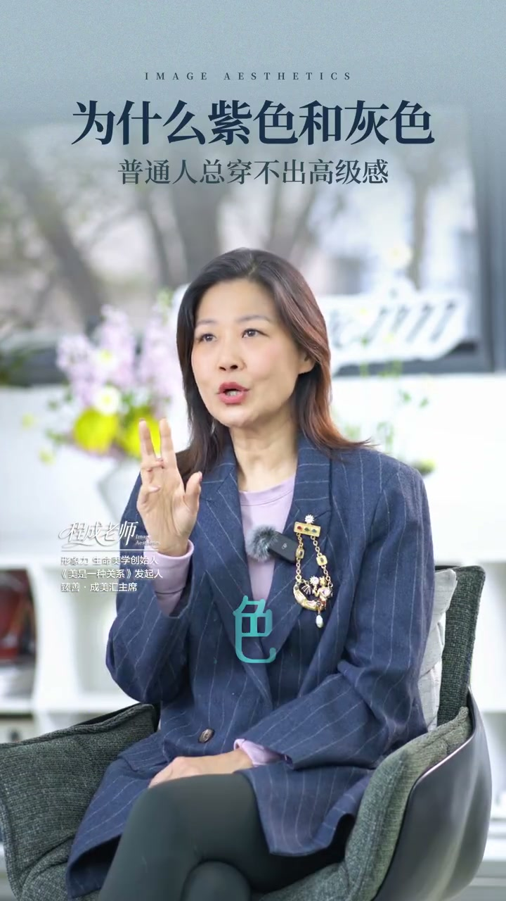
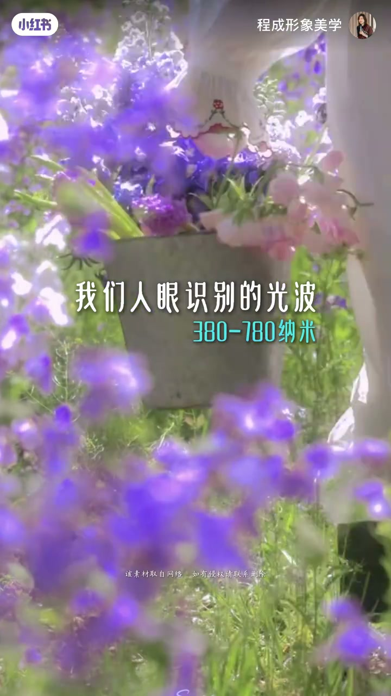
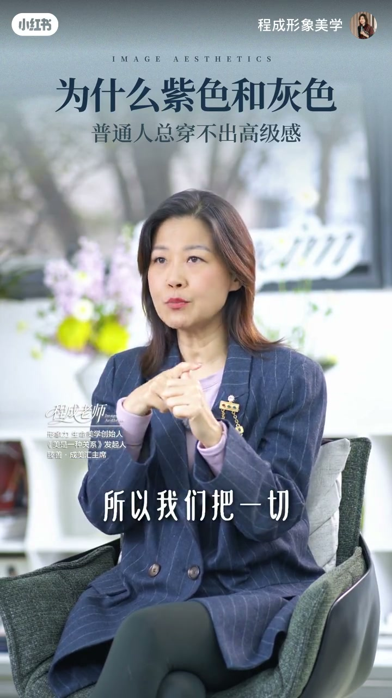
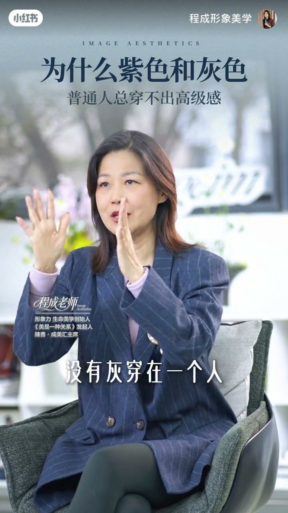

内容要点
一支 2 分钟的穿搭色彩课。UP 主「程成形象美学」从色彩学切入：最难穿的两个颜色，有彩色里是紫、无彩色里是灰。紫色是 380 纳米附近的短波、在人类文明中被赋予高贵神秘，穿它的人要烟火气不足、精神属性强、身型不强壮；灰色本身叫无态度（灰色收入、灰色地带皆从此来），穿它的人五官要立体精致、风格要鲜明丰丽，否则灰扑扑邋遢无存在感。结论：灰色在服装中要么是金字塔尖的最高级，要么是最低级。
知识结构
有彩色里最难穿的是紫，无彩色里最难穿的是灰。穿紫色要求不能胖、不能壮、微微纤弱同时有精致感。紫色光波在 380 纳米短波、不稳定，所以人类文明赋予它高贵又神秘的感觉。
穿紫色的人烟火味不能足、世俗味道不足，带有较强的精神属性。琼瑶小说《穿紫衣的女人》就是这种形象的注脚：不食人间烟火、精神追求高、家境不错、身体不强壮的女性。
灰色收入、灰色地带——凡界定不清的事物都称灰。着装中灰色要求五官立体精致、举止态度风格鲜明丰丽；否则灰扑扑、邋遢、无存在感；五官清晰精致、风格丰丽时，灰就是高级灰。
灰色在服装中的使用要么是金字塔尖的最高级，要么是最低级——毫无态度主张、模糊成一团。
紫与灰都不是「穿上就高级」的颜色，而是「人成就颜色」的颜色：紫色要求内在精神属性与身型纤弱，灰色要求五官立体与风格鲜明。普通人穿不出高级感，本质是人的气质没达到颜色要求的高度。
00:00-00:31紫与灰：最难穿的两个颜色与紫色的物理基础
视频开门见山：「最难穿的两个颜色，在油彩色里面是紫，无彩色里面是灰。」两个最难穿的颜色一个来自有彩色系、一个来自无彩色系，横跨整个色彩世界。
为什么紫难穿？UP 主给出物理层面的解释：人眼识别的光波在 380 到 780 纳米之间，而紫色就在 380 纳米那一小段，「光波本身就是短波，非常不稳定」。正因为这种不稳定性，紫色在人类文明中被赋予的感觉是「高贵的，同时神秘」。
穿紫色的人因此有硬性门槛：不能胖、不能壮、微微纤弱，同时要有精致感。


00:32-01:07穿紫色的三个内在要求
第一，烟火味不能足。「但凡这个人身上有比较多的世俗，穿不了紫。」紫色要求的是「烟火气和世俗味道不足，带有比较强的精神的属性」。
为了说明这种气质，UP 主引用琼瑶的小说《穿紫衣的女人》——「你一听你就觉得这是一本文艺书」，背后的想象是一个不食人间烟火的、精神追求非常高、家境不错、身体不强壮的女性。
这组形象标签（精神属性强 + 身型纤弱 + 有精致感）就是穿紫的门槛：紫色天然和世俗、强壮、烟火气相冲突。
01:08-01:50灰色是无态度，高级灰需要五官与风格托底
灰色难穿的原因完全相反：「灰色本身叫无态度。我们把一切模糊的事情称之为灰色——灰色收入、灰色地带，但凡界定不清楚的人事物我们称之为灰。」
所以灰色在着装中对穿着者的要求是「五官要立体、要精致，举止态度风格要鲜明丰丽」——颜色本身无态度，就要人来赋予态度。
反面是大多数人穿灰的样子：「没有灰穿在一个人身上，就灰扑扑的，变成灰的很邋遢，很无存在感。」而一旦五官清晰精致、态度风格丰丽，「这个灰就是高级灰」。


01:51-02:03结论：灰色是极端色
UP 主最后给出干脆的结论：「灰色在服装中的使用，要么是金字塔尖的最高级，要么是最低级——毫无态度主张，模糊成一团。」
紫色与灰色的共同点：它们都不是「穿上就赢」的颜色，而是放大穿着者特质的颜色。人的气质到了，颜色就高级；气质不到，颜色就暴露短板。
完整转录（58段）
以下文本由 Whisper medium 模型自动转录，可能存在少量识别误差，已尽可能修正。
最难穿的两个颜色
在油彩色里面是紫
无彩色里面是灰
穿紫色的人要求不能胖
不能壮
微微鲜弱
同时有精致感
因为大自然中间
我们人眼识别的光波
380到780纳米
紫色就在380纳米那么一小段
所以它光波本身就是短波
非常不稳定
所以紫色在人类的文明中间
它被赋予的感觉是高贵的
同时神秘
所以穿紫色的人
身上的特质要求很多
第一个特质就是这个人身上的烟火味不能足
就是但凡这个人身上有比较多的世俗
穿不了紫
所以紫一定是这个人身上的烟火气
和世俗味道不足
带有比较强的精神的属性
琼瑶阿姨有个小说叫《穿紫衣的女人》
你一听你就觉得这是一本文艺书
它的背后让你想象力的
就是一个不食人间烟火的
但是精神追求非常高的
家境不错的
身体不强壮的一位女性
其实还有一个很难穿的颜色
是灰
就是灰色本身叫无态度
所以我们把一切模糊的事情称之为灰色
灰色收入
灰色地带
但凡界定不清楚的人
事物我们称之为灰
那么灰色在着装过程中间
要求这个人的五官要立体
要精致
举止态度风格
要鲜明丰丽
没有灰穿在一个人身上
就灰扑扑的
就变成灰的很邋遢
很无存在感
但是如果这个人五官清晰
精致
态度和风格
丰丽
这个灰就是高级灰
所以灰色在服装中的使用
要么是金字塔尖的最高级
要么是最低级
毫无态度主张
模糊成一团